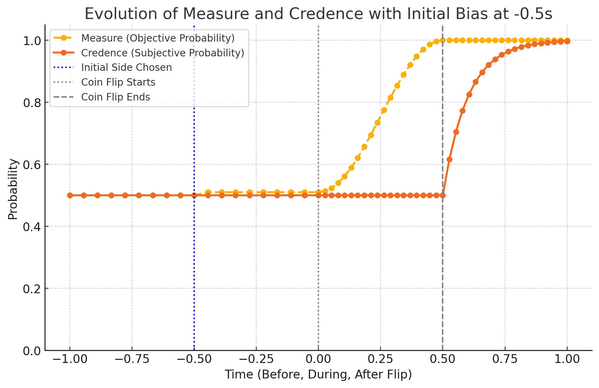

Measure, Vantage, Branchcone
The toolkit of objective probability
Half a second before a coin flip, the flipper sets the coin heads-up on her thumb. Nobody’s beliefs change — the spectators still call it fifty-fifty, and they are right to. But something about the world has already changed. Empirically, a flipped coin lands the same side up it started slightly more often than not — about 51% of the time — so the objective probability of heads just moved from 0.500 to roughly 0.51 while every rational observer’s confidence stayed put at 0.5.
Moved relative to what? That is the question this chapter answers. “The probability of heads” is not a free-floating number attached to the coin. It is a quantity anchored at a point — this coin, this thumb, this instant, these initial conditions — and computed over a definite set of futures flowing out of that point. Most confusion about probability, and nearly all confusion about counterfactuals, comes from leaving the anchor and the set implicit. The Quantum Branching Universe (QBU) lets us make both explicit. This chapter defines the three pieces of machinery — Measure, Vantage, Branchcone — and then puts them to work on counterfactuals, on the coin, and on a photon that has been in flight for billions of years.
Measure
In the QBU, reality is a branching structure of timelines: every quantum event forks the universe, every fork spawns a timeline for each outcome, and each branch carries an objective weight — the squared amplitude the textbook tradition calls the Born probability. Given that structure, objective probability has a direct definition. The Measure of an event \(E\), evaluated from a reference point \(V\), is the weighted fraction of forward branches in which \(E\) occurs:
\[ \mu_V(E) = \frac{\text{quantum measure of branches containing } E \text{ forward from } V}{\text{total quantum measure of all branches forward from } V} \]
Measure quantifies how widely or narrowly an outcome occurs across the quantum timelines branching forward from the reference point. It is a physical fact about the branching structure, on the same footing as mass or charge: fixed by the wavefunction, indifferent to what anyone believes or knows. When I say the objective probability of heads is 51%, I am reporting the weighted proportion of futures — actual futures, all of them real — in which the coin lands heads.
Notice that the definition will not run without the subscript. Measure is always Measure from somewhere.
Vantage
That somewhere is the Vantage: the anchor for “right now,” the point from which the Measures of future events are computed. A Vantage is not a vague “the present moment”; it is a precisely specified node in the branching causal structure — a unique event-point within a timeline, carrying all the initial conditions relevant to what flows forward from it: the quantum states, the physical configuration, the biological and historical facts as they stand at that point.
Two things follow. First, every Measure statement is implicitly indexed: \(\mu_V(E)\) says what fraction of the futures of this exact world-state contain \(E\). Second, as the world evolves, the Vantage advances along the actual branch — and Measures computed from it change, not because anyone learned anything, but because branches where the event fails are peeling away behind the moving anchor. That is what happened at \(-0.5\) seconds: choosing heads-up fixed an initial condition, moving the calculation to a new Vantage from which the heads branches carry weight 0.51 instead of 0.50.
Branchcone
The Vantage anchors the calculation; the Branchcone bounds it. A Branchcone is the set of all quantum timelines branching forward from a given Vantage through a specified duration:
\[ \mathcal{B}(V, T) = \{\text{all quantum timelines branching forward from } V \text{ extending up to } V + T\} \]
The name is deliberate. Relativity gives every event a light cone — the region of spacetime it can influence. The QBU gives every Vantage a branchcone — the ensemble of timelines it can become. Where the light cone bounds causal reach in space, the Branchcone bounds it across branches, and it supplies the clean temporal and causal boundary that probability statements need. “The probability my headache is gone” is ill-posed; “the Measure of headache-gone within one hour of this Vantage” is a definite ratio over a definite set:
\[ \mu_V(E) = \frac{\text{quantum measure of branches within } \mathcal{B}(V, T) \text{ containing event } E}{\text{total quantum measure of all branches within } \mathcal{B}(V, T)} \]
This is the same Measure as before, now with its domain stated explicitly. Every well-formed objective probability claim has this form: an event, a Vantage, a horizon.
Counterfactuals Without Ghosts
The machinery pays for itself immediately on the most notoriously slippery constructions in language: counterfactuals. “If I had taken aspirin, my headache would be gone.” What could make such a claim true? I didn’t take the aspirin. The classical options are unattractive: treat the claim as meaningless, or follow David Lewis and evaluate it at the “nearest possible world” where I did — leaving possible world and nearest as primitives floating free of physics.
The QBU replaces the ghostly possible worlds with actual branches. Evaluating a counterfactual takes three steps:
- Identify the actual Vantage — the one where the antecedent did not occur (no aspirin, headache persists).
- Identify the nearest alternate Vantage where the antecedent did occur (aspirin taken) — a real node in the branching structure, differing minimally in its past conditions.
- The counterfactual is true if and only if the Measure of the consequent, computed forward from that alternate Vantage, is nearly 1.
Formally, writing \(V_B\) for the alternate Vantage:
\[ X \square\!\!\rightarrow Y \quad\Longleftrightarrow\quad \mu_{V_B}(Y) \approx 1 \]
If, in nearly all the branches forward of the aspirin-taking Vantage (by weight), the headache resolves, the counterfactual is objectively true. If aspirin only helps in 60% of those branches, the flat conditional is false — though “if I had taken aspirin, my headache would probably be gone” is true, and the machinery even tells you the number. This is Lewis-style semantics with the metaphysics paid for: the “nearby world” is a branch the universe actually contains, and “would have” is a Measure over it. Counterfactuals stop being ghost stories and become physics. What this buys for the analysis of causation itself — cause as branch structure — is the subject of Causality and Counterfactuals.
Worked Case: Heads or Tails
Now run the coin flip through the full toolkit, tracking two quantities side by side: Measure, defined above, and Credence — the subjective probability an observer assigns given the information they actually have. Measure belongs to this volume; Credence and the discipline of updating it belong to Measure and Credence. The coin flip is the cleanest demonstration of why they must not be conflated: over a two-second interval the two quantities, which started equal, come apart completely and then reconverge.
Before \(-0.5\) s. A fair coin, no side chosen. The situation is symmetric, and both quantities sit at 0.5 — Measure because the branches forward of this Vantage split evenly by weight, Credence because the observer has no information that favors either side.
At \(-0.5\) s. The flipper sets the coin heads-up. Symmetry breaks: from the new Vantage, the same-side bias puts the heads branches at weight \(\approx 0.51\). Measure steps from 0.500 to 0.51. The spectators, who cannot see which side is up — or don’t know the bias exists — hold their Credence at 0.5, and are rationally correct to.
During the flip, \(0\) to \(0.5\) s. The coin leaves the thumb, and from here the physics is essentially deterministic. Measure does not jump; it evolves smoothly. As the Vantage advances through the flight, the branches in which the coin lands tails thin out behind it — muscle noise, air currents, tumble dynamics resolve one microsecond at a time — and the Measure of heads climbs continuously from 0.51 toward 1.0 as the outcome becomes progressively locked in. Long before the coin lands, the weight of futures has effectively already decided. Credence, meanwhile, does nothing. No new evidence has reached the observer, so no update is licensed; the subjective curve runs dead flat at 0.5 while the objective curve sweeps up to certainty.
After \(0.5\) s. The coin lands and is observed. Measure has been at 1.0 since the outcome locked in; now Credence catches up, snapping from 0.5 to 1.0 as the evidence arrives.

The chart makes the divergence vivid: the Measure curve begins rising the instant the flip starts, while the Credence curve holds its flat line straight through the crossing and only leaps after the landing. In summary:
| Phase | Measure of heads | Credence in heads |
|---|---|---|
| Before side chosen (< \(-0.5\) s) | 0.5 | 0.5 |
| Side set heads-up (\(-0.5\) s) | steps to ~0.51 | 0.5 |
| Coin in flight (\(0\) to \(0.5\) s) | climbs smoothly 0.51 → 1.0 | 0.5 |
| Landed and observed (> \(0.5\) s) | 1.0 | updates rapidly to 1.0 |
Two different quantities, two different dynamics. Measure moves when the world changes — when the Vantage advances and branches peel away. Credence moves when information arrives. They agree at the start and the end, which is exactly why everyday language gets away with one word for both, and exactly why the middle of the flip — where the world is 90% decided and the observer still rightly says fifty-fifty — is where sloppy probability talk falls apart.
Worked Case: Wheeler’s Cosmic Delayed Choice
The same machinery scales from half a second to half the age of the universe. John Wheeler’s delayed-choice experiment, in its cosmic version: a photon emitted billions of years ago by a distant quasar passes an intervening galaxy whose gravity lenses it, splitting its path into multiple coherent routes around the lens. The photon travels all of them in superposition. Billions of years later it arrives at Earth, where an experimenter chooses — tonight — whether to measure interference between the paths (wave-like behavior) or which path it took (particle-like behavior).
The result seems paranormal: a decision made tonight appears to determine what the photon was doing billions of years ago. If measurement collapsed the wavefunction, you would be forced into retrocausality — today’s choice reaching back to edit cosmic history.
The QBU dissolves the paradox with the Vantage. There is no collapse and nothing edits the past. For the entire crossing, the photon’s superposition simply persists — quantum coherence is indifferent to distance and duration — and during those billions of years there is no fact of the matter about which path it took, because no branching event has occurred that distinguishes the paths. The branching happens tonight, at the measurement: the experimenter’s choice determines which measurement interacts with the superposition, decoherence splits the timelines accordingly, and each resulting branch carries a definite classical description of the photon’s journey. From the Vantage of the choice, the Measures over the possible outcomes are fixed by the amplitudes the photon actually carries — initial conditions plus gravitational lensing — and the Branchcone forward of that Vantage contains every way the measurement can come out.
So the delayed choice does not alter history; it determines, from tonight’s Vantage, which history gets written — which classical narrative attaches to a quantum past that was never classically definite in the first place. Histories in the QBU are exactly as Vantage-relative as Measures are: until a branching event forces a description, there isn’t one. What looks like the present reaching back into the past is just the general lesson of this chapter applied at cosmic scale — probability, counterfactuals, and even history itself are quantities computed forward from a Vantage, over the branches it can become.